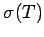

Eine sequentielle Charakteristik der Kompaktheit eines Operators aus  ist die folgende: Für jede beschränkte Folge
ist die folgende: Für jede beschränkte Folge  aus
aus  enthält die Folge eine konvergente Teilfolge. Eine Linearkombination kompakter Operatoren ist wieder kompakt. Ist einer der Operatoren kompakt, dann sind es auch die Operatoren TU und . Falls
enthält die Folge eine konvergente Teilfolge. Eine Linearkombination kompakter Operatoren ist wieder kompakt. Ist einer der Operatoren kompakt, dann sind es auch die Operatoren TU und . Falls  ein BANACH-Raum ist, hat man die folgenden wichtigen Aussagen.
ein BANACH-Raum ist, hat man die folgenden wichtigen Aussagen.
- 1. Konvergenz:
- Konvergiert eine Folge von kompakten Operatoren
 im Raum , dann ist der Grenzwert ebenfalls ein kompakter Operator.
im Raum , dann ist der Grenzwert ebenfalls ein kompakter Operator.
- 2. Satz von Schauder:
- Ist T ein linearer stetiger Operator, dann sind T und T* gleichzeitig kompakt (oder nicht).
- 3. Spektraleigenschaften eines kompakten Operators
- T in einem (unendlichdimensionalen) BANACH-Raum Die Null gehört zum Spektrum. Jeder von Null verschiedene Punkt des Spektrums  ist ein Eigenwert mit endlichdimensionalem Eigenraum , und für
 liegen außerhalb des Kreises stets nur endlich viele Eigenwerte von
liegen außerhalb des Kreises stets nur endlich viele Eigenwerte von  , wobei einzig die Null Häufungspunkt der Menge der Eigenwerte sein kann. Ist kein Eigenwert von , dann ist T-1 im Falle seiner Existenz unbeschränkt.
, wobei einzig die Null Häufungspunkt der Menge der Eigenwerte sein kann. Ist kein Eigenwert von , dann ist T-1 im Falle seiner Existenz unbeschränkt.